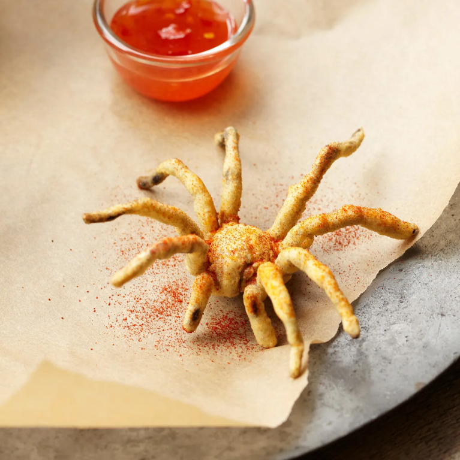

Fried Tarantula

Delicious well fried Tarantula, a classic dish beloved by all!
A seasoned and crunchy meat with a shellfish amazing flavour.
it goes well on a first date!
Ingredients
- Well...
- A wild Tarantula
- A lot of spices, please!
Steps
- Firstly go into the wild
- With your insect net catch a Tarantula (you can of course also use a capture cup)
- Put it fast in the deep fried before you need to call the paramedics
- Now put all the spices available... et voilà!!!